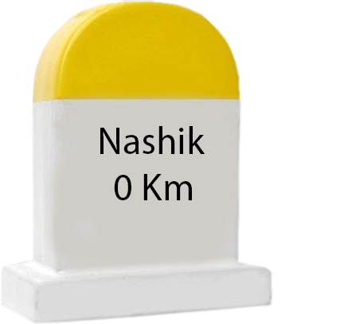

When it comes to planning the perfect picnic, there’s no one size fits all approach. Many different factors influence the decisions you need to make, be it weather conditions, the number of attendees, cost, and even dietary requirements (to name a few). So forward planning is clearly a must, and that’s the reason for this helpful cheat sheet. You’ll find everything you need to know and consider for planning the perfect picnic for family, friends, and colleagues. During summer you can really go outside anywhere to enjoy the warm weather, but it’s always nice to choose a quiet spot with a view. Parks and beaches are usually great picnic locations and sometimes will even have tables you can easily set up at. I chose to go to one of my favorite parks, Huntington Central Park, because of the wide open space and green scenery. Even though Huntington is pretty urbanized, this a great spot to be in touch with nature. Here’s some other great suggestions for picnic locations .
Nashik City

